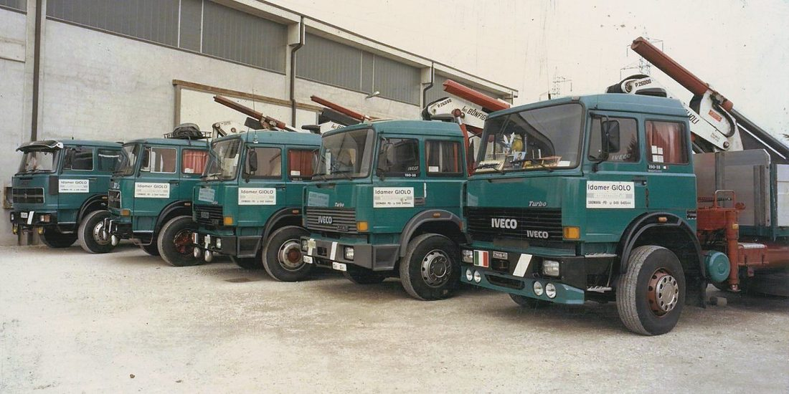
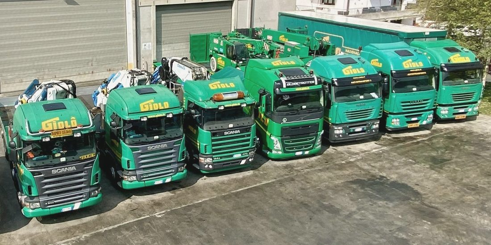
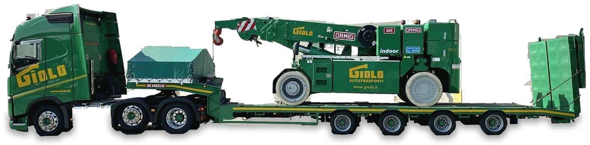
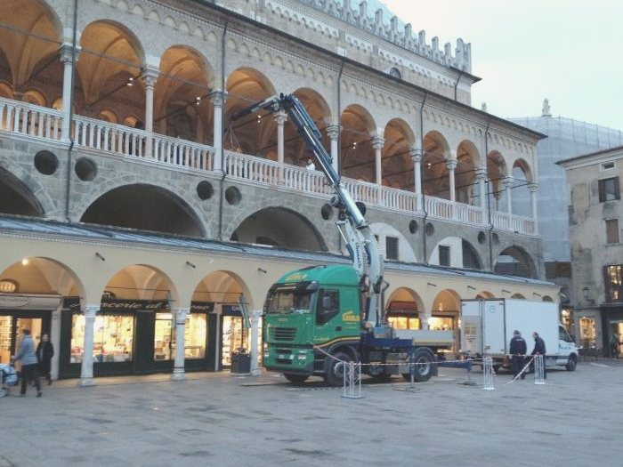
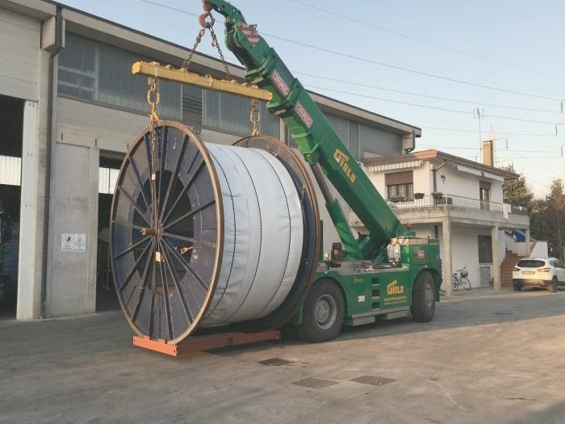
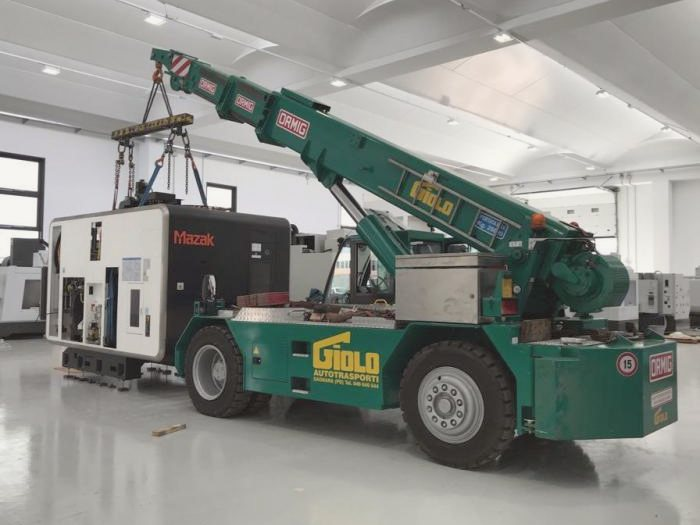
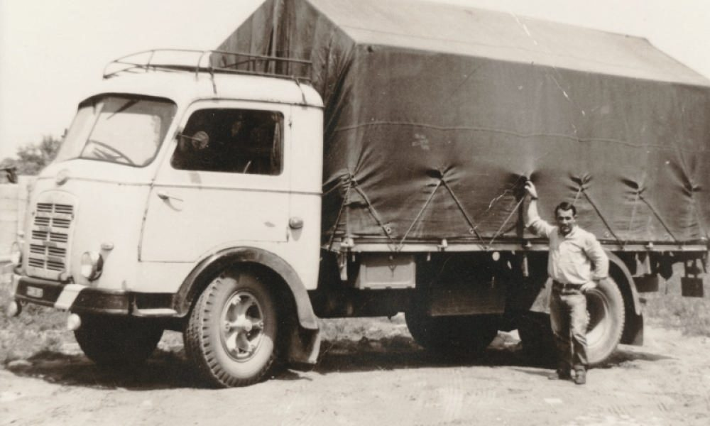

Dal 1961 spostiamo quello che le aziende non possono fermare
Spostamento di macchinari industriali, autogru con operatore e trasporti eccezionali. A Saonara, in provincia di Padova.


AlloraCinque autocarri con gru davanti al capannone. Sulle portiere: Idamer Giolo, Saonara PD. Foto d'archivio.
OggiLa flotta sul piazzale: Scania, Volvo e Iveco, verdi con la scritta GIOLO gialla.
Cinque servizi, nessun subappalto
Siamo un'azienda di famiglia a Saonara, in provincia di Padova. Ogni operazione la gestiamo internamente, con mezzi e operatori nostri.
Posizionamento con gru
Dal singolo macchinario al sollevamento in quota, anche negli spazi stretti del centro città.
Spostamento di macchinari industriali
Presse, torni e impianti spostati dentro lo stabilimento, anche con il reparto in funzione.
Trasporti eccezionali
Trattori stradali e semirimorchi ribassati con la culla alta 40 cm, per i carichi fuori misura.
Noleggio di autocarri con gru
Solo a caldo: al comando c'è sempre un nostro operatore esperto.
Deposito temporaneo di macchinari
Nella nostra sede di Saonara, allarmata, recintata e costantemente monitorata.
Ogni carico è coperto da tre polizze distinte: RC Vettore, All Risks sul valore reale della merce e Al Gancio, che la tutela mentre viene agganciata, sollevata, movimentata e depositata.
Per legge la RC Vettore risarcisce al massimo 1 euro per ogni chilo di merce (art. 1696 c.c.): per una pressa non basta. Come funzionano le tre coperture
Tre autogru elettriche per lavorare dentro i reparti
Le Ormig da 25, 35 e 40 t entrano nei capannoni senza inquinamento e rumori. Le portiamo noi, sui nostri semirimorchi ribassati.

L'ultimo metro
Portare il carico è metà del lavoro. L'altra metà è metterlo al suo posto: in piazza, sul piazzale, dentro il reparto.




Dopo 65 anni, la nostra storia parla per noi
Siamo sempre pronti a raccontartela di persona.